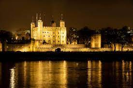
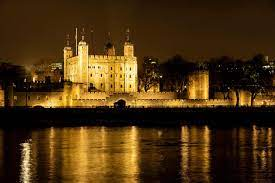
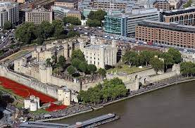
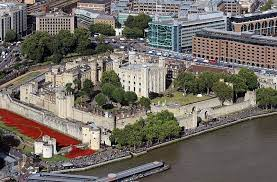

LONDON TOWER
LOCATION
ㅤThe Tower of London is located on the north bank of the River Thames in central London, England. It is located in the Tower Hamlets district, next to Tower Bridge. The exact location is: Tower of London, London EC3N 4AB, United Kingdom. The Tower of London is easily accessible via public transport, including tubes, buses and tourist boats on the River Thames.
CURIOSITIES
ㅤ-Millennial history: The Tower of London has over a thousand years of history, being founded in 1066 by William the Conqueror. Over the centuries, it has played many roles, such as a fortress, royal palace, prison, and even a zoo.
ㅤ-Resident Ravens: The Tower of London is believed to have been protected since the 17th century by the presence of at least six ravens. According to legend, if the crows leave the tower, the kingdom will face a great disaster.
ㅤ -Crown Jewels: The Tower of London is home to the famous British Crown Jewels. They are displayed in the Jewel House and include the Imperial Scepter of State, the Crown of St Edward and the famous Cullinan diamond, among other gems.
ㅤ -Betrayals and executions: The Tower of London has been the scene of several famous betrayals and executions over the centuries. Among the most notorious are Anne Boleyn, second wife of Henry VIII, and Lady Jane Grey, queen for only nine days.
ㅤ -Bears and Elephants: For many years, the Tower of London was home to a royal zoo. In the 13th century, there were exotic animals like bears, elephants, lions and even a crocodile.
ㅤ-Popular Visitation: The Tower of London is one of the UK's most popular tourist attractions, attracting millions of visitors each year. It is possible to explore its historic buildings, walk along the ramparts and learn about its rich history. 
ㅤ-Resident Ravens: The Tower of London is believed to have been protected since the 17th century by the presence of at least six ravens. According to legend, if the crows leave the tower, the kingdom will face a great disaster.
ㅤ -Crown Jewels: The Tower of London is home to the famous British Crown Jewels. They are displayed in the Jewel House and include the Imperial Scepter of State, the Crown of St Edward and the famous Cullinan diamond, among other gems.
ㅤ -Betrayals and executions: The Tower of London has been the scene of several famous betrayals and executions over the centuries. Among the most notorious are Anne Boleyn, second wife of Henry VIII, and Lady Jane Grey, queen for only nine days.
ㅤ -Bears and Elephants: For many years, the Tower of London was home to a royal zoo. In the 13th century, there were exotic animals like bears, elephants, lions and even a crocodile.
ㅤ-Popular Visitation: The Tower of London is one of the UK's most popular tourist attractions, attracting millions of visitors each year. It is possible to explore its historic buildings, walk along the ramparts and learn about its rich history. 
HISTORY
ㅤThe history of the Tower of London dates back to 1066, when William the Conqueror ordered the construction of a stone fortress on the banks of the River Thames. Initially, the tower was built as a demonstration of Norman power and a way to control the City of London.
During the early years, the Tower of London played a strategic role in the defense of the city. Over time, however, its role has expanded. Over the centuries, the tower served as a royal palace, prison, mint, armory, place of execution and even a zoo.
The tower has been expanded and modified by different rulers over the centuries. The complex includes several structures, such as the White Tower (White Tower), built by William the Conqueror, the Wakefield Tower, the Bloody Tower (Bloody Tower) and the Tower of Beauchamp.
ㅤDuring the Middle Ages, the Tower of London was known as a notorious prison. Many prominent historical figures were imprisoned and executed there, including Anne Boleyn, Henry VIII's second wife, and Lady Jane Grey, who was queen for only nine days.
ㅤAnother famous aspect of the Tower of London is the presence of crows. According to legend, the British monarchy is destined to fall if the ravens leave the tower. For this reason, crows have been kept there since the 17th century. Today, the Tower of London is one of the most popular tourist attractions in London, attracting millions of visitors every year. In addition to exploring its rich history and architecture, visitors can admire the British Crown Jewels, which are kept inside. The Tower of London has played an important role over the centuries in UK history, and its rich heritage continues to delight and fascinate people the world over.
ㅤDuring the Middle Ages, the Tower of London was known as a notorious prison. Many prominent historical figures were imprisoned and executed there, including Anne Boleyn, Henry VIII's second wife, and Lady Jane Grey, who was queen for only nine days.
ㅤAnother famous aspect of the Tower of London is the presence of crows. According to legend, the British monarchy is destined to fall if the ravens leave the tower. For this reason, crows have been kept there since the 17th century. Today, the Tower of London is one of the most popular tourist attractions in London, attracting millions of visitors every year. In addition to exploring its rich history and architecture, visitors can admire the British Crown Jewels, which are kept inside. The Tower of London has played an important role over the centuries in UK history, and its rich heritage continues to delight and fascinate people the world over.
CULTURAL IMPACT
ㅤThe Tower of London has a significant cultural impact as a historic and tourist icon of the United Kingdom. Its long history as a fortress, palace and prison has made it a symbol of power and authority over the centuries. The tower is a popular tourist attraction, attracting millions of visitors every year. She also inspires artists and writers, appears in works of art, literature and films.
ㅤThe Tower of London is recognized as a UNESCO World Heritage Site and is known for its intriguing legends and stories. Its importance to the British monarchy is highlighted by royal events and the British Crown Jewels on display. Overall, the Tower of London has a lasting cultural impact and contributes to the UK's cultural identity. 
ㅤThe Tower of London is recognized as a UNESCO World Heritage Site and is known for its intriguing legends and stories. Its importance to the British monarchy is highlighted by royal events and the British Crown Jewels on display. Overall, the Tower of London has a lasting cultural impact and contributes to the UK's cultural identity. 
TIPS FOR VISITORS
ㅤ-Plan ahead: Check opening times, purchase advance tickets online and plan your time to properly explore the Tower of London.
ㅤ-Arrive early: The Tower of London can get crowded, especially during peak periods. Arriving early helps avoid crowds and allows you to better enjoy your visit.
ㅤ-Use an audio guide or take a guided tour: To make the most of your visit, consider using an audio guide or joining a guided tour. This will give you detailed information about the tower's history and points of interest.
ㅤ -Explore beyond the White Tower: The White Tower is the most famous attraction, but there is much more to explore within the complex, including the chapel, moats, gardens and exhibitions.
ㅤ-Enjoy the Crown Jewels: Don't miss the opportunity to see the famous British Crown Jewels on display. Keep an eye out for the times when screenings take place and plan your visit accordingly.
ㅤ-Walk the Walls: The Tower offers the unique opportunity to walk the Walls and enjoy panoramic views of London. Take advantage of this experience to capture beautiful photos and enjoy the scenery.
ㅤ-Pay attention to special shows and events: The Tower of London offers a variety of shows and events throughout the day, such as weapons demonstrations and historical reenactments. Stay tuned for the schedule and enjoy these extra activities.
ㅤ -Visit the Gift Shop: At the end of your tour, stop by the Gift Shop for unique souvenirs from your visit to the Tower of London.
ㅤ-Combine with other attractions: Take the opportunity to combine your visit to the Tower of London with other nearby attractions, such as Tower Bridge or St. Paul's Cathedral, to optimize your time in London.
ㅤ-Be prepared for the weather: The weather in London can be unpredictable. Be sure to pack an umbrella or raincoat, especially if visiting during the wettest months.
ㅤ-Arrive early: The Tower of London can get crowded, especially during peak periods. Arriving early helps avoid crowds and allows you to better enjoy your visit.
ㅤ-Use an audio guide or take a guided tour: To make the most of your visit, consider using an audio guide or joining a guided tour. This will give you detailed information about the tower's history and points of interest.
ㅤ -Explore beyond the White Tower: The White Tower is the most famous attraction, but there is much more to explore within the complex, including the chapel, moats, gardens and exhibitions.
ㅤ-Enjoy the Crown Jewels: Don't miss the opportunity to see the famous British Crown Jewels on display. Keep an eye out for the times when screenings take place and plan your visit accordingly.
ㅤ-Walk the Walls: The Tower offers the unique opportunity to walk the Walls and enjoy panoramic views of London. Take advantage of this experience to capture beautiful photos and enjoy the scenery.
ㅤ-Pay attention to special shows and events: The Tower of London offers a variety of shows and events throughout the day, such as weapons demonstrations and historical reenactments. Stay tuned for the schedule and enjoy these extra activities.
ㅤ -Visit the Gift Shop: At the end of your tour, stop by the Gift Shop for unique souvenirs from your visit to the Tower of London.
ㅤ-Combine with other attractions: Take the opportunity to combine your visit to the Tower of London with other nearby attractions, such as Tower Bridge or St. Paul's Cathedral, to optimize your time in London.
ㅤ-Be prepared for the weather: The weather in London can be unpredictable. Be sure to pack an umbrella or raincoat, especially if visiting during the wettest months.